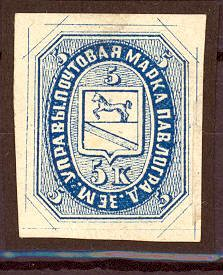
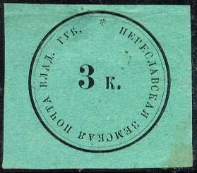
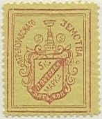
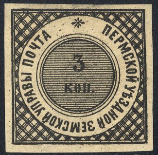

Return To Catalogue - Go to Zemstvos overview - Russia
Note: on my website many of the
pictures can not be seen! They are of course present in the
catalogue;
contact me if you want to purchase it.

5 k blue ('V' in the corners, rare)
5 k blue ('5' in the corners)
5 k lilac (only 20 stamps known to exist)

(reduced size)

1/2 k black 1/2 k lilac (1910) 2 k blue 3 k red 10 k green
These stamps exist with the 'E' of "ZEMSTVA' inverted.


1/2 k yellow 1/2 k orange 2 k red 3 k violet 3 k blue 10 k green (exists imperforate)

3 k black on green (3 types)


Two different types.
3 k blue and red 5 k blue and red

3 k black on yellow
3 k black on yellow (3 types)
5/3 k black on yellow ('5' in the center)

5 k black on brown 5 k black on lilac


5 k blue (imperforated) 5 k black on orange (imperforated) 5 k red on green 5 k blue on red 5 k red on grey 5 k grey 5 k red 5 k green 5 k brown

5 k blue on orange 5 k red on yellow (1889)

3 k blue 5 k green 5 k lilac
An erroneous impression of this stamp exists, the '3k.' in the upper right corner is replaced by '5k.'
1872 Value in circle
3 k (2 types; without or with dot after 'cep')

(value on horizontally shaded background)
3 k black (2 types, without or with dot after 'cep') 3 k black (with shaded background)

5 k red 5 k blue (I've seen a tete-beche pair)
2 k green 2 k red 2 k blue 2 k yellow
15 k red
I have been told that the above stamp was used in Kolchak in 1918, note that the word in the right bottom has been crossed out.


1 k brown 2 k orange 3 k green 5 k blue 10 k red 15 k brown 20 k grey
3 k black on orange


{kind=link}
{kind=link}
{kind=link}